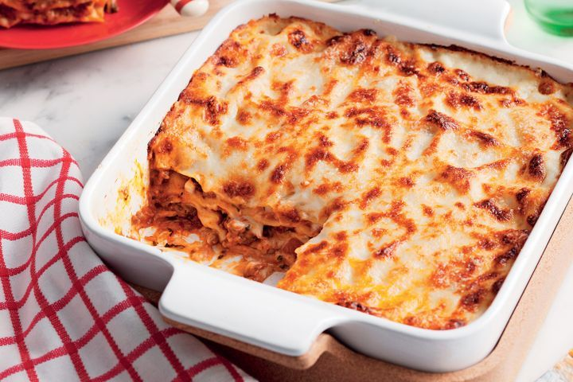

Tirsdag: Lasagne med gulerødder og fuldkornsplader
OPSKRIFT TIL 4 PERSONER
400 g oksekød
1 pakke lasagneplader
3 store gulerødder
2 løg
1 fed hvidløg
1 dåse flåede tomater
Salt og peber
3 dl vand
Andre krydderier, hvis man ønsker
3 dl mælk
2 dl becel
2 dl mel
200 g revet ost
Svits løgene på kraftigvarme, og kom derefter kødet i og svits sammen med. Tilsæt de ønskede krydderier og hvidløg. Tilføj de flåede tomater sammen med de revet gulerødder og bring gryden i kog. Lad gryderetten hvile, mens du laver bechamel sovsen. Hæld de 2 dl becel i en gryde, og lad det smelte. Tilsæt melen og mælken, og pisk indtil en ensartet masse. Du kan altid tilføje mere mel eller mælk, så vidt du ønsker mere. Herefter fylder du et fad med lidt væske fra gryderetten, og tilføjer derefter lasagneplader. Kødsaucen kommes ovenpå efterfulgt af bachamel sovsen. Sådan fortsætter du til, du ikke har mere, hvorefter du kommer revet ost ovenpå. Ovenen tændes på 200° i alm. ovn i 30 minutter.
OPSKRIFT TIL 4 PERSONER
1 blomkål, fint revet
1 håndfuld frisk koriander, groft hakket
saft og skal fra 1 økologisk lime
1 moden mango, i tern
1 rød peberfrugt, i tern
1 avocado
Jalapones
1 dåse sorte bønner
Olie til stegning
Chili og taco krydderi
Bland revet blomkål sammen med koriander, limesaft og skal. Lad det trække imens de andre ting gøres klar.Varm en pande op til medium varme, smelt lidt olie og steg de sorte bønner heri i et par minutter. Tilsæt taco krydderi, vend det rundt og lad det stege yderligere 5 min. Anret blomålris, mango, peberfrugt, avocado og sorte bønner i hver deres sektion i 2 skåle.

Torsdag: Kylling med ris og sur sød sauce.
OPSKRIFT TIL 4 PERSONER
1 pakke kylling
2 store gulerødder
1 stk peberfrugt
1 fed hvidløg
1/2 tsk groft salt
3 dl ris
1 flaske sur sød sauce
Bring en gryde med 5 dl vand i kog.Svits kyllingeternene med ønskede krydderier på en kraftig varm pande. Tilføj de 2 dl ris i gryden, når det koger. Tilsæt derefter gulerods-og peberstrimlerne på panden med kyllingen, mens der skrues ned på mediumvarme.Herfter tilsættes sur sød saucen, og retten er færdig, når sur søden begynder at koge.